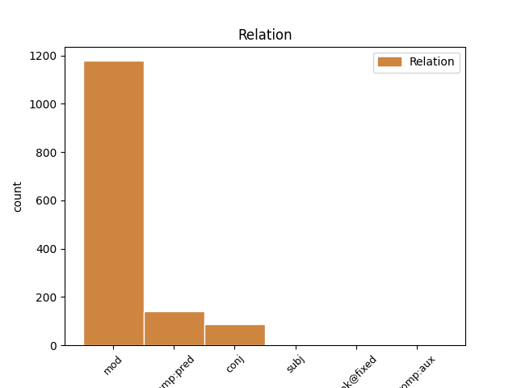
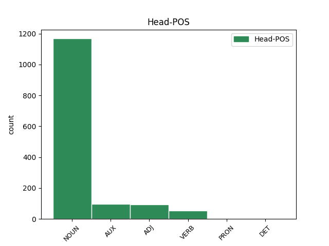
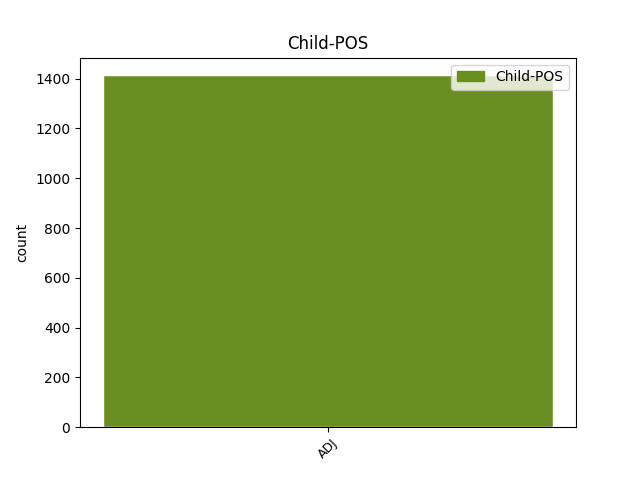

Distribution of features within this leaf



Agreement Rules sorted by frequency.
- When the dependent token is the modifer(mod) of the head token, and the dependent token is ADJ.
1 " _ _ _ _ 0 _ _ _
2 C' _ _ _ _ 0 _ _ _
3 est _ _ _ _ 0 _ _ _
4 une _ _ _ _ 0 _ _ _
5 grande _ _ _ _ 0 _ _ _
6 découverte découverte NOUN S Gender=Fem|Number=Sing 0 _ _ _
7 scientifique scientifique ADJ A Number=Sing 6 mod _ SpaceAfter=No
8 " _ _ _ _ 0 _ _ _
9 . _ _ _ _ 0 _ _ _
1 1 _ _ _ _ 0 _ _ _
2 . _ _ _ _ 0 _ _ _
3 L' _ _ _ _ 0 _ _ _
4 individu _ _ _ _ 0 _ _ _
5 a _ _ _ _ 0 _ _ _
6 des _ _ _ _ 0 _ _ _
7 devoirs _ _ _ _ 0 _ _ _
8 envers _ _ _ _ 0 _ _ _
9 la _ _ _ _ 0 _ _ _
10 communauté _ _ _ _ 0 _ _ _
11 dans _ _ _ _ 0 _ _ _
12 laquelle _ _ _ _ 0 _ _ _
13 seul _ _ _ _ 0 _ _ _
14 le _ _ _ _ 0 _ _ _
15 libre _ _ _ _ 0 _ _ _
16 et _ _ _ _ 0 _ _ _
17 plein _ _ _ _ 0 _ _ _
18 développement _ _ _ _ 0 _ _ _
19 de _ _ _ _ 0 _ _ _
20 sa _ _ _ _ 0 _ _ _
21 personnalité _ _ _ _ 0 _ _ _
22 est être AUX V Mood=Ind|Number=Sing|Person=3|Tense=Pres|VerbForm=Fin 0 _ _ _
23 possible possible ADJ A Gender=Fem|Number=Sing 22 comp:pred _ SpaceAfter=No
24 . _ _ _ _ 0 _ _ _
1 Ce _ _ _ _ 0 _ _ _
2 qui _ _ _ _ 0 _ _ _
3 arrivera _ _ _ _ 0 _ _ _
4 c' _ _ _ _ 0 _ _ _
5 est _ _ _ _ 0 _ _ _
6 que _ _ _ _ 0 _ _ _
7 les _ _ _ _ 0 _ _ _
8 chips _ _ _ _ 0 _ _ _
9 polystyrène _ _ _ _ 0 _ _ _
10 commenceront _ _ _ _ 0 _ _ _
11 à _ _ _ _ 0 _ _ _
12 voyager _ _ _ _ 0 _ _ _
13 dans _ _ _ _ 0 _ _ _
14 notre _ _ _ _ 0 _ _ _
15 société _ _ _ _ 0 _ _ _
16 ici _ _ _ _ 0 _ _ _
17 et _ _ _ _ 0 _ _ _
18 iront _ _ _ _ 0 _ _ _
19 s' _ _ _ _ 0 _ _ _
20 accumuler _ _ _ _ 0 _ _ _
21 chez _ _ _ _ 0 _ _ _
22 les _ _ _ _ 0 _ _ _
23 personnes _ _ _ _ 0 _ _ _
24 les _ _ _ _ 0 _ _ _
25 plus _ _ _ _ 0 _ _ _
26 ivres ivre ADJ A Number=Plur 0 _ _ _
27 et _ _ _ _ 0 _ _ _
28 radines radin ADJ A Gender=Fem|Number=Plur 26 conj _ SpaceAfter=No
29 . _ _ _ _ 0 _ _ _
1 Et _ _ _ _ 0 _ _ _
2 ce _ _ _ _ 0 _ _ _
3 flux _ _ _ _ 0 _ _ _
4 , _ _ _ _ 0 _ _ _
5 le _ _ _ _ 0 _ _ _
6 flux _ _ _ _ 0 _ _ _
7 de _ _ _ _ 0 _ _ _
8 la _ _ _ _ 0 _ _ _
9 vie _ _ _ _ 0 _ _ _
10 , _ _ _ _ 0 _ _ _
11 de _ _ _ _ 0 _ _ _
12 la _ _ _ _ 0 _ _ _
13 base _ _ _ _ 0 _ _ _
14 jusqu' _ _ _ _ 0 _ _ _
15 à _ _ _ _ 0 _ _ _
16 le _ _ _ _ 0 _ _ _
17 sommet _ _ _ _ 0 _ _ _
18 , _ _ _ _ 0 _ _ _
19 est _ _ _ _ 0 _ _ _
20 le _ _ _ _ 0 _ _ _
21 flux _ _ _ _ 0 _ _ _
22 que _ _ _ _ 0 _ _ _
23 voit voir VERB V Mood=Ind|Number=Sing|Person=3|Tense=Pres|VerbForm=Fin 0 _ _ _
24 l' _ _ _ _ 0 _ _ _
25 écologiste écologiste ADJ A Number=Sing 23 subj _ SpaceAfter=No
26 . _ _ _ _ 0 _ _ _
1 Cette _ _ _ _ 0 _ _ _
2 semaine _ _ _ _ 0 _ _ _
3 , _ _ _ _ 0 _ _ _
4 nous _ _ _ _ 0 _ _ _
5 organiserons _ _ _ _ 0 _ _ _
6 un _ _ _ _ 0 _ _ _
7 débat _ _ _ _ 0 _ _ _
8 ici _ _ _ _ 0 _ _ _
9 pour _ _ _ _ 0 _ _ _
10 parler _ _ _ _ 0 _ _ _
11 de _ _ _ _ 0 _ _ _
12 la _ _ _ _ 0 _ _ _
13 sécurité _ _ _ _ 0 _ _ _
14 de _ _ _ _ 0 _ _ _
15 le _ _ _ _ 0 _ _ _
16 transport _ _ _ _ 0 _ _ _
17 maritime _ _ _ _ 0 _ _ _
18 , _ _ _ _ 0 _ _ _
19 à _ _ _ _ 0 _ _ _
20 la _ _ _ _ 0 _ _ _
21 suite _ _ _ _ 0 _ _ _
22 de _ _ _ _ 0 _ _ _
23 la _ _ _ _ 0 _ _ _
24 catastrophe _ _ _ _ 0 _ _ _
25 de _ _ _ _ 0 _ _ _
26 l' _ _ _ _ 0 _ _ _
27 Erika _ _ _ _ 0 _ _ _
28 , _ _ _ _ 0 _ _ _
29 et _ _ _ _ 0 _ _ _
30 nous _ _ _ _ 0 _ _ _
31 devrons _ _ _ _ 0 _ _ _
32 discuter _ _ _ _ 0 _ _ _
33 tout _ _ _ _ 0 _ _ _
34 à _ _ _ _ 0 _ _ _
35 le le DET RD Definite=Def|Gender=Masc|Number=Sing|PronType=Art 0 _ _ _
36 long long ADJ A Gender=Masc|Number=Sing 35 unk@fixed _ _
37 de _ _ _ _ 0 _ _ _
38 cette _ _ _ _ 0 _ _ _
39 année _ _ _ _ 0 _ _ _
40 de _ _ _ _ 0 _ _ _
41 les _ _ _ _ 0 _ _ _
42 objectifs _ _ _ _ 0 _ _ _
43 , _ _ _ _ 0 _ _ _
44 en _ _ _ _ 0 _ _ _
45 matière _ _ _ _ 0 _ _ _
46 de _ _ _ _ 0 _ _ _
47 sécurité _ _ _ _ 0 _ _ _
48 , _ _ _ _ 0 _ _ _
49 de _ _ _ _ 0 _ _ _
50 le _ _ _ _ 0 _ _ _
51 transport _ _ _ _ 0 _ _ _
52 aérien _ _ _ _ 0 _ _ _
53 . _ _ _ _ 0 _ _ _
1 Cette _ _ _ _ 0 _ _ _
2 rénovation _ _ _ _ 0 _ _ _
3 , _ _ _ _ 0 _ _ _
4 qui _ _ _ _ 0 _ _ _
5 s' _ _ _ _ 0 _ _ _
6 est être AUX VA Mood=Ind|Number=Sing|Person=3|Tense=Pres|VerbForm=Fin 0 _ _ _
7 étendue étendue ADJ A Number=Sing 6 comp:aux _ _
8 sur _ _ _ _ 0 _ _ _
9 plusieurs _ _ _ _ 0 _ _ _
10 mois _ _ _ _ 0 _ _ _
11 , _ _ _ _ 0 _ _ _
12 a _ _ _ _ 0 _ _ _
13 coupé _ _ _ _ 0 _ _ _
14 cette _ _ _ _ 0 _ _ _
15 importante _ _ _ _ 0 _ _ _
16 voie _ _ _ _ 0 _ _ _
17 de _ _ _ _ 0 _ _ _
18 communication _ _ _ _ 0 _ _ _
19 entre _ _ _ _ 0 _ _ _
20 le _ _ _ _ 0 _ _ _
21 nord _ _ _ _ 0 _ _ _
22 et _ _ _ _ 0 _ _ _
23 le _ _ _ _ 0 _ _ _
24 sud _ _ _ _ 0 _ _ _
25 de _ _ _ _ 0 _ _ _
26 l' _ _ _ _ 0 _ _ _
27 Europe _ _ _ _ 0 _ _ _
28 . _ _ _ _ 0 _ _ _
Disagree Examples:
1 reproduire _ _ _ _ 0 _ _ _
2 l' _ _ _ _ 0 _ _ _
3 Oeuvre _ _ _ _ 0 _ _ _
4 , _ _ _ _ 0 _ _ _
5 incorporer _ _ _ _ 0 _ _ _
6 l' _ _ _ _ 0 _ _ _
7 Oeuvre _ _ _ _ 0 _ _ _
8 dans _ _ _ _ 0 _ _ _
9 une un DET RI Definite=Ind|Gender=Fem|Number=Sing|PronType=Art 0 _ _ _
10 ou _ _ _ _ 0 _ _ _
11 plusieurs plusieur ADJ A Number=Plur 9 conj _ _
12 oeuvres _ _ _ _ 0 _ _ _
13 dites _ _ _ _ 0 _ _ _
14 derivées _ _ _ _ 0 _ _ _
15 et _ _ _ _ 0 _ _ _
16 reproduire _ _ _ _ 0 _ _ _
17 l' _ _ _ _ 0 _ _ _
18 oeuvre _ _ _ _ 0 _ _ _
19 telle _ _ _ _ 0 _ _ _
20 qu' _ _ _ _ 0 _ _ _
21 incorporée _ _ _ _ 0 _ _ _
22 dans _ _ _ _ 0 _ _ _
23 les _ _ _ _ 0 _ _ _
24 dites _ _ _ _ 0 _ _ _
25 oeuvres _ _ _ _ 0 _ _ _
26 dites _ _ _ _ 0 _ _ _
27 collectives _ _ _ _ 0 _ _ _
28 ; _ _ _ _ 0 _ _ _
1 Ma _ _ _ _ 0 _ _ _
2 question _ _ _ _ 0 _ _ _
3 porte _ _ _ _ 0 _ _ _
4 sur _ _ _ _ 0 _ _ _
5 un _ _ _ _ 0 _ _ _
6 sujet _ _ _ _ 0 _ _ _
7 qui _ _ _ _ 0 _ _ _
8 est _ _ _ _ 0 _ _ _
9 à _ _ _ _ 0 _ _ _
10 l' _ _ _ _ 0 _ _ _
11 ordre _ _ _ _ 0 _ _ _
12 de _ _ _ _ 0 _ _ _
13 le _ _ _ _ 0 _ _ _
14 jour _ _ _ _ 0 _ _ _
15 de _ _ _ _ 0 _ _ _
16 le _ _ _ _ 0 _ _ _
17 jeudi _ _ _ _ 0 _ _ _
18 et _ _ _ _ 0 _ _ _
19 que _ _ _ _ 0 _ _ _
20 je _ _ _ _ 0 _ _ _
21 soulèverai _ _ _ _ 0 _ _ _
22 donc _ _ _ _ 0 _ _ _
23 une _ _ _ _ 0 _ _ _
24 nouvelle nouveau ADJ A Gender=Fem|Number=Sing 25 mod _ _
25 fois foi NOUN S Gender=Fem|Number=Plur 0 _ _ _
26 . _ _ _ _ 0 _ _ _
1 Ou _ _ _ _ 0 _ _ _
2 de _ _ _ _ 0 _ _ _
3 les _ _ _ _ 0 _ _ _
4 bateliers _ _ _ _ 0 _ _ _
5 et _ _ _ _ 0 _ _ _
6 leurs _ _ _ _ 0 _ _ _
7 navires _ _ _ _ 0 _ _ _
8 d' _ _ _ _ 0 _ _ _
9 Europe _ _ _ _ 0 _ _ _
10 orientale _ _ _ _ 0 _ _ _
11 qui _ _ _ _ 0 _ _ _
12 amarrent _ _ _ _ 0 _ _ _
13 leurs _ _ _ _ 0 _ _ _
14 bateaux _ _ _ _ 0 _ _ _
15 côte _ _ _ _ 0 _ _ _
16 à _ _ _ _ 0 _ _ _
17 côte _ _ _ _ 0 _ _ _
18 , _ _ _ _ 0 _ _ _
19 ce _ _ _ _ 0 _ _ _
20 qui _ _ _ _ 0 _ _ _
21 rend rendre VERB V Mood=Ind|Number=Sing|Person=3|Tense=Pres|VerbForm=Fin 0 _ _ _
22 les _ _ _ _ 0 _ _ _
23 situations _ _ _ _ 0 _ _ _
24 dangereuses _ _ _ _ 0 _ _ _
25 d' _ _ _ _ 0 _ _ _
26 autant _ _ _ _ 0 _ _ _
27 plus _ _ _ _ 0 _ _ _
28 évidentes évidentes ADJ A Gender=Fem|Number=Plur 21 comp:pred _ SpaceAfter=No
29 . _ _ _ _ 0 _ _ _
1 Par _ _ _ _ 0 _ _ _
2 rapport _ _ _ _ 0 _ _ _
3 à _ _ _ _ 0 _ _ _
4 ce _ _ _ _ 0 _ _ _
5 qu' _ _ _ _ 0 _ _ _
6 a _ _ _ _ 0 _ _ _
7 déclaré _ _ _ _ 0 _ _ _
8 M. _ _ _ _ 0 _ _ _
9 Swoboda _ _ _ _ 0 _ _ _
10 à _ _ _ _ 0 _ _ _
11 le _ _ _ _ 0 _ _ _
12 sujet _ _ _ _ 0 _ _ _
13 de _ _ _ _ 0 _ _ _
14 l' _ _ _ _ 0 _ _ _
15 activité _ _ _ _ 0 _ _ _
16 de _ _ _ _ 0 _ _ _
17 le _ _ _ _ 0 _ _ _
18 CEN _ _ _ _ 0 _ _ _
19 , _ _ _ _ 0 _ _ _
20 je _ _ _ _ 0 _ _ _
21 voudrais _ _ _ _ 0 _ _ _
22 dire _ _ _ _ 0 _ _ _
23 que _ _ _ _ 0 _ _ _
24 nous _ _ _ _ 0 _ _ _
25 insistons _ _ _ _ 0 _ _ _
26 auprès _ _ _ _ 0 _ _ _
27 d' _ _ _ _ 0 _ _ _
28 eux _ _ _ _ 0 _ _ _
29 pour _ _ _ _ 0 _ _ _
30 qu' _ _ _ _ 0 _ _ _
31 ils _ _ _ _ 0 _ _ _
32 accélèrent _ _ _ _ 0 _ _ _
33 à _ _ _ _ 0 _ _ _
34 le _ _ _ _ 0 _ _ _
35 maximum _ _ _ _ 0 _ _ _
36 leur _ _ _ _ 0 _ _ _
37 travail _ _ _ _ 0 _ _ _
38 car _ _ _ _ 0 _ _ _
39 ce _ _ _ _ 0 _ _ _
40 serait _ _ _ _ 0 _ _ _
41 dramatique _ _ _ _ 0 _ _ _
42 que _ _ _ _ 0 _ _ _
43 , _ _ _ _ 0 _ _ _
44 malgré _ _ _ _ 0 _ _ _
45 le _ _ _ _ 0 _ _ _
46 nouveau _ _ _ _ 0 _ _ _
47 délai _ _ _ _ 0 _ _ _
48 , _ _ _ _ 0 _ _ _
49 nous _ _ _ _ 0 _ _ _
50 nous _ _ _ _ 0 _ _ _
51 retrouvions _ _ _ _ 0 _ _ _
52 dans _ _ _ _ 0 _ _ _
53 un _ _ _ _ 0 _ _ _
54 peu _ _ _ _ 0 _ _ _
55 plus _ _ _ _ 0 _ _ _
56 d' _ _ _ _ 0 _ _ _
57 un _ _ _ _ 0 _ _ _
58 an _ _ _ _ 0 _ _ _
59 devant _ _ _ _ 0 _ _ _
60 les _ _ _ _ 0 _ _ _
61 mêmes _ _ _ _ 0 _ _ _
62 difficultés _ _ _ _ 0 _ _ _
63 pour _ _ _ _ 0 _ _ _
64 avoir _ _ _ _ 0 _ _ _
65 été être AUX V Gender=Masc|Number=Sing|Tense=Past|VerbForm=Part 0 _ _ _
66 incapables incapable ADJ A Number=Plur 65 comp:pred _ _
67 d' _ _ _ _ 0 _ _ _
68 y _ _ _ _ 0 _ _ _
69 apporter _ _ _ _ 0 _ _ _
70 une _ _ _ _ 0 _ _ _
71 solution _ _ _ _ 0 _ _ _
72 . _ _ _ _ 0 _ _ _
1 Nous _ _ _ _ 0 _ _ _
2 estimons estimer VERB V Mood=Ind|Number=Plur|Person=1|Tense=Pres|VerbForm=Fin 0 _ _ _
3 fort _ _ _ _ 0 _ _ _
4 positif positif ADJ A Gender=Masc|Number=Sing 2 comp:pred _ _
5 que _ _ _ _ 0 _ _ _
6 , _ _ _ _ 0 _ _ _
7 dans _ _ _ _ 0 _ _ _
8 ses _ _ _ _ 0 _ _ _
9 conclusions _ _ _ _ 0 _ _ _
10 , _ _ _ _ 0 _ _ _
11 le _ _ _ _ 0 _ _ _
12 rapporteur _ _ _ _ 0 _ _ _
13 ait _ _ _ _ 0 _ _ _
14 tenu _ _ _ _ 0 _ _ _
15 compte _ _ _ _ 0 _ _ _
16 de _ _ _ _ 0 _ _ _
17 notre _ _ _ _ 0 _ _ _
18 proposition _ _ _ _ 0 _ _ _
19 selon _ _ _ _ 0 _ _ _
20 laquelle _ _ _ _ 0 _ _ _
21 les _ _ _ _ 0 _ _ _
22 infrastructures _ _ _ _ 0 _ _ _
23 de _ _ _ _ 0 _ _ _
24 la _ _ _ _ 0 _ _ _
25 recherche _ _ _ _ 0 _ _ _
26 devraient _ _ _ _ 0 _ _ _
27 être _ _ _ _ 0 _ _ _
28 élargies _ _ _ _ 0 _ _ _
29 dans _ _ _ _ 0 _ _ _
30 les _ _ _ _ 0 _ _ _
31 pays _ _ _ _ 0 _ _ _
32 de _ _ _ _ 0 _ _ _
33 la _ _ _ _ 0 _ _ _
34 cohésion _ _ _ _ 0 _ _ _
35 en _ _ _ _ 0 _ _ _
36 implantant _ _ _ _ 0 _ _ _
37 les _ _ _ _ 0 _ _ _
38 écoles _ _ _ _ 0 _ _ _
39 professionnelles _ _ _ _ 0 _ _ _
40 et _ _ _ _ 0 _ _ _
41 les _ _ _ _ 0 _ _ _
42 universités _ _ _ _ 0 _ _ _
43 de _ _ _ _ 0 _ _ _
44 telle _ _ _ _ 0 _ _ _
45 sorte _ _ _ _ 0 _ _ _
46 qu' _ _ _ _ 0 _ _ _
47 elles _ _ _ _ 0 _ _ _
48 servent _ _ _ _ 0 _ _ _
49 mieux _ _ _ _ 0 _ _ _
50 les _ _ _ _ 0 _ _ _
51 populations _ _ _ _ 0 _ _ _
52 de _ _ _ _ 0 _ _ _
53 les _ _ _ _ 0 _ _ _
54 régions _ _ _ _ 0 _ _ _
55 les _ _ _ _ 0 _ _ _
56 moins _ _ _ _ 0 _ _ _
57 développées _ _ _ _ 0 _ _ _
58 et _ _ _ _ 0 _ _ _
59 qu' _ _ _ _ 0 _ _ _
60 elles _ _ _ _ 0 _ _ _
61 permettent _ _ _ _ 0 _ _ _
62 à _ _ _ _ 0 _ _ _
63 les _ _ _ _ 0 _ _ _
64 personnes _ _ _ _ 0 _ _ _
65 formées _ _ _ _ 0 _ _ _
66 de _ _ _ _ 0 _ _ _
67 demeurer _ _ _ _ 0 _ _ _
68 dans _ _ _ _ 0 _ _ _
69 leur _ _ _ _ 0 _ _ _
70 région _ _ _ _ 0 _ _ _
71 d' _ _ _ _ 0 _ _ _
72 origine _ _ _ _ 0 _ _ _
73 . _ _ _ _ 0 _ _ _